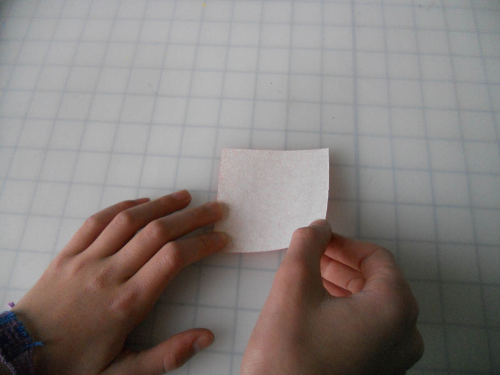
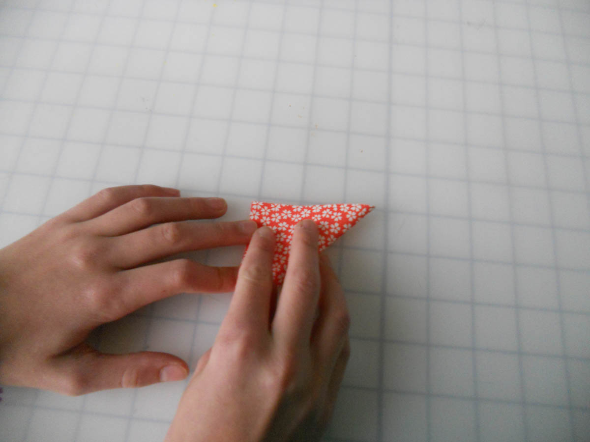
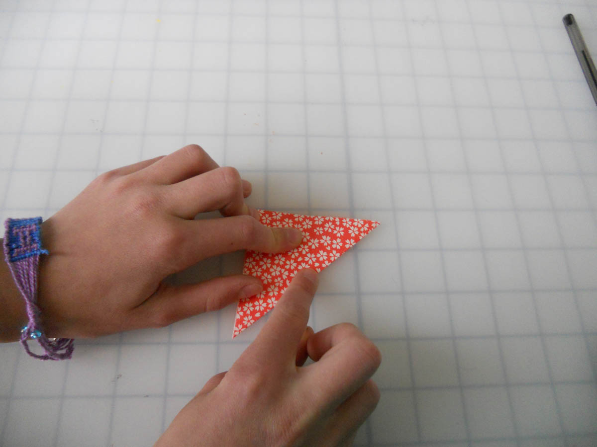
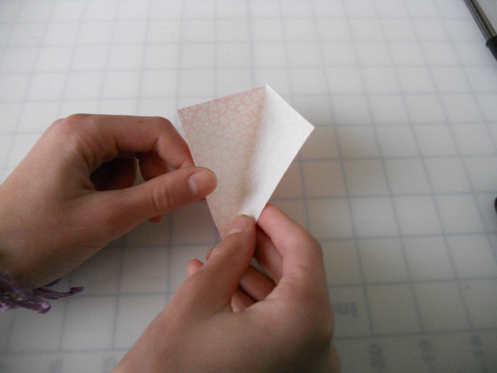
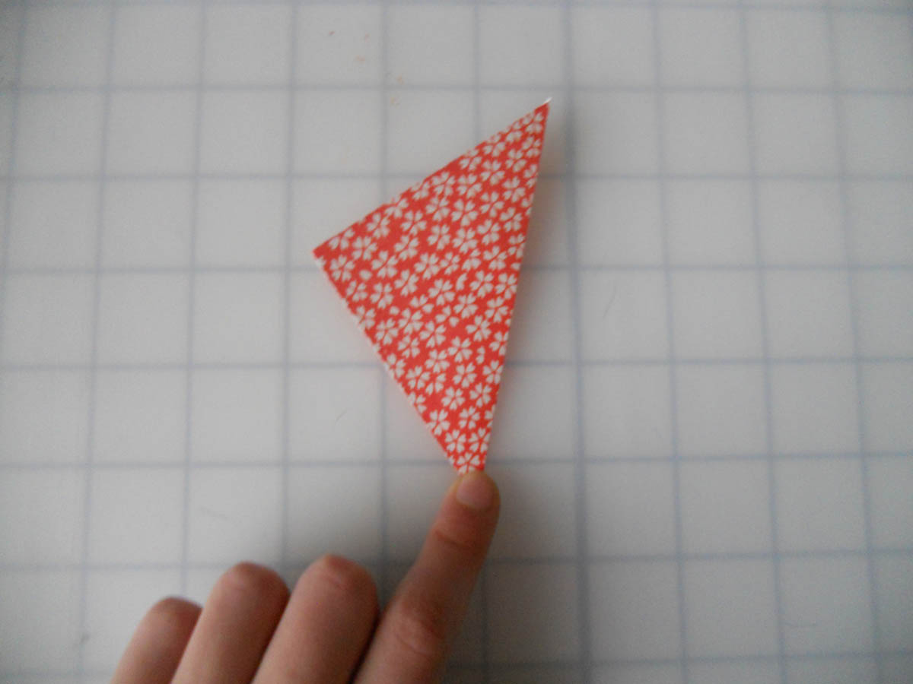
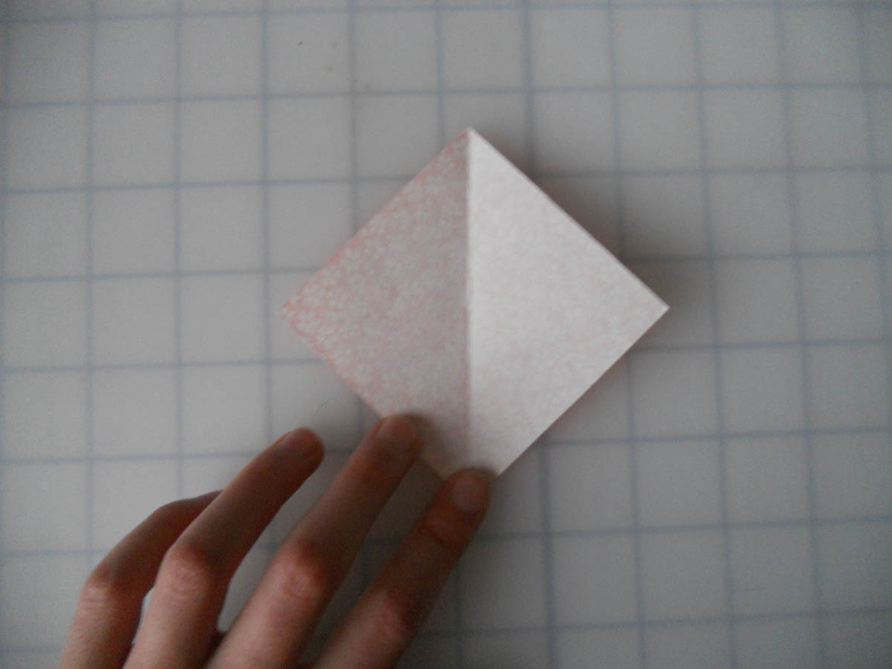
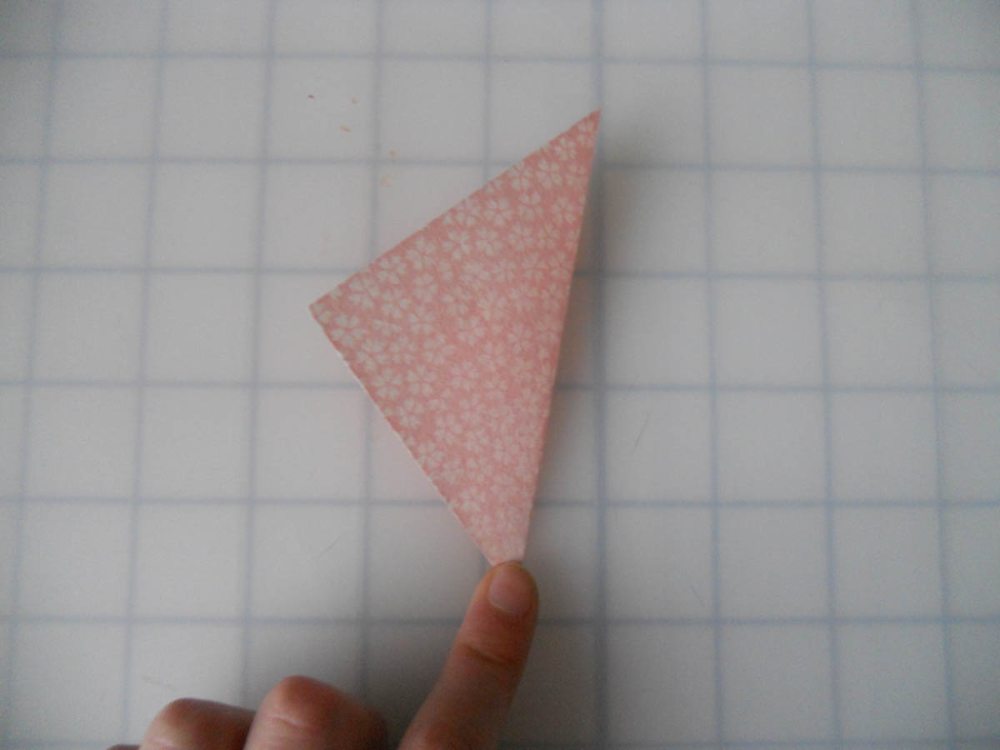
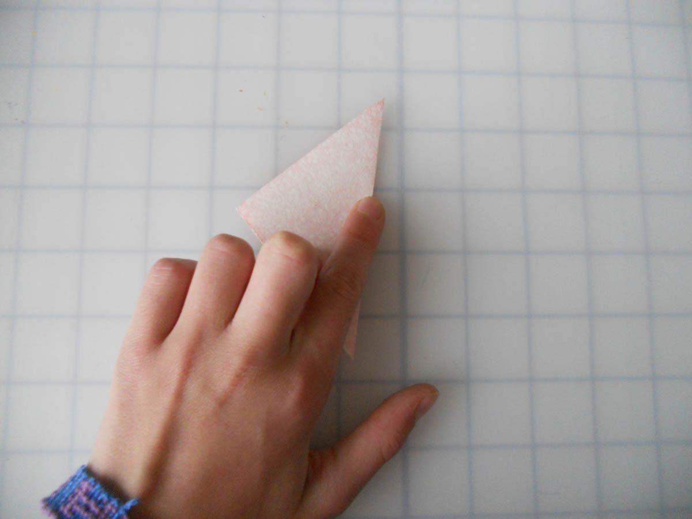
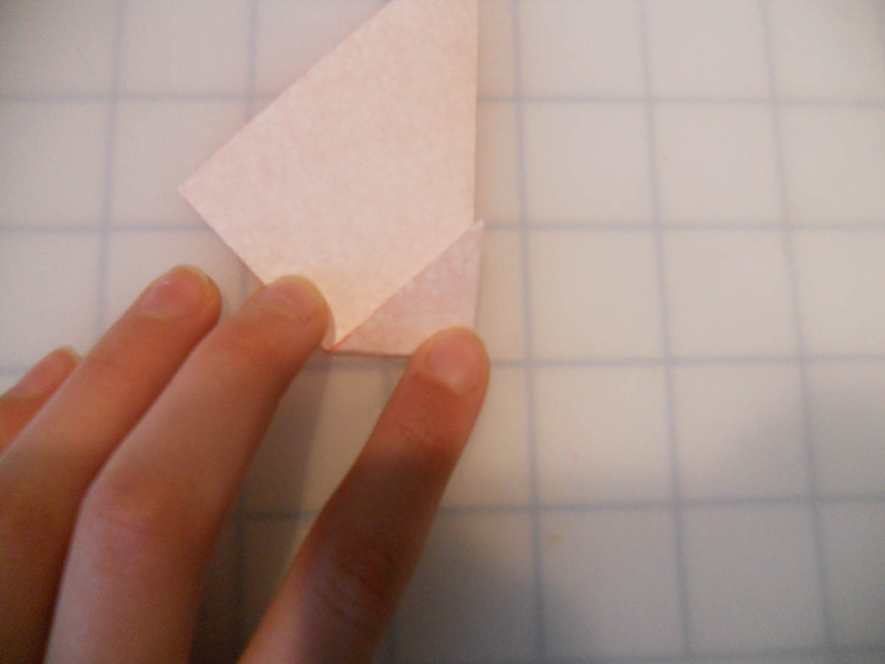
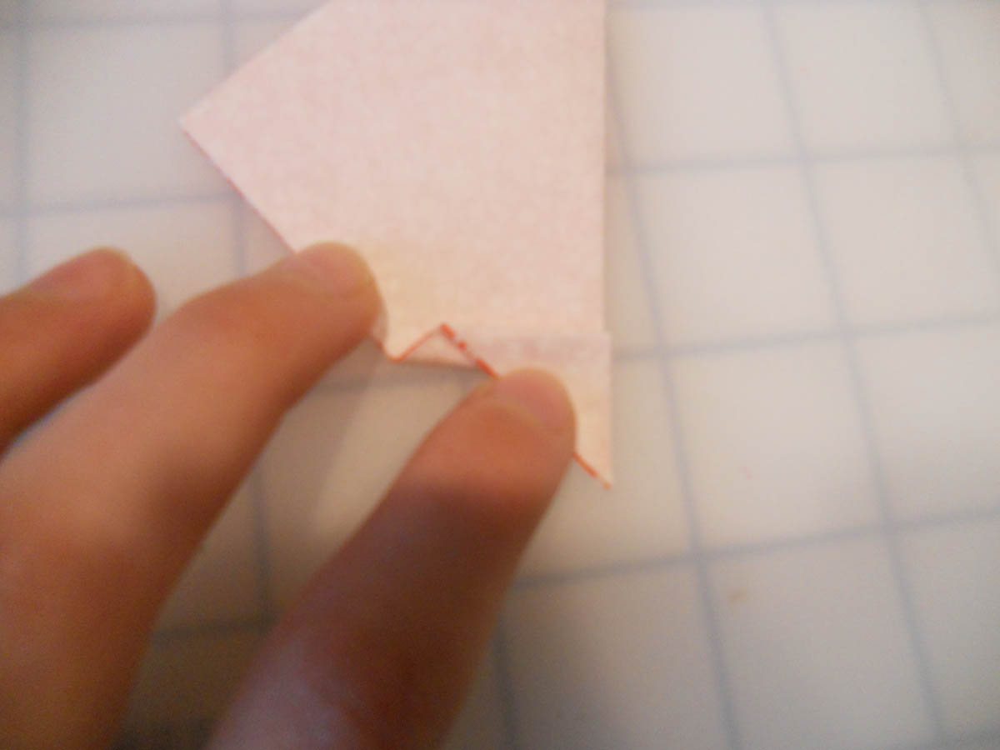

How to do Origami Mountain, Valley, and Pleat Folds
Mountain and Valley folds are the most basic folds in origami. Pleat folds come next. In this tutorial, I will show you how to do all three.

1. For the valley fold in this example, we will
start with a square of paper, white side up
and oriented as shown.

2. Bring the bottom-right corner up to the
top-left corner.

3. And run your finger down the edge to crease.

4. If you open the paper up halfway, you can
see that the paper forms a "valley".

5. You have made a valley fold!

1. A mountain fold is just the opposite of a
valley fold.

2. Bring the right tip behind to meet the left tip.

3. Run your finger along the edge to crease it.

1. To pleat fold, simply valley fold the bottom
tip up...

2. And then mountain fold it back down.